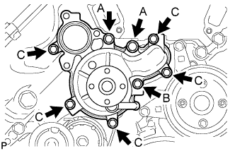

WATER PUMP > INSTALLATION |
| 1. INSTALL WATER PUMP ASSEMBLY |
|  |
Install a new gasket and the water pump with the 8 bolts shown in the illustration.
| 2. INSTALL WATER PUMP PULLEY |
Temporarily install the water pump pulley with the 4 bolts.
 |
Using SST, hold the water pump pulley and tighten the 4 bolts.
| 3. INSTALL WATER INLET HOUSING |
Install a new gasket to the water pump.
Install the water inlet housing with the 3 bolts.
| 4. CONNECT NO. 5 WATER BY-PASS HOSE |
 |
Connect the No. 5 water by-pass hose.
| *a | Front |
| *b | Upper Side |
| 5. CONNECT NO. 8 WATER BY-PASS HOSE |
 |
Connect the No. 8 water by-pass hose.
| *a | Front |
| *b | Upper Side |
| 6. INSTALL NO. 1 WATER BY-PASS HOSE |
 |
Install the No. 1 water by-pass hose.
| *a | Front |
| *b | Upper Side |
| 7. INSTALL FAN SHROUD |
Install the fan pulley to the water pump.
Place the fan shroud together with the fluid coupling between the radiator and engine.
Temporarily install the fluid coupling to the water pump with the 4 nuts. Tighten the nuts as much as possible by hand.
 |
Set the fan shroud on the radiator as shown in the illustration.
Install the shroud with the 2 bolts.
Install the fan and generator V-ribbed belt (Click here).
Tighten the 4 nuts of the fluid coupling.
| 8. INSTALL NO. 1 RADIATOR HOSE |
 |
Install the No. 1 radiator hose.
| *1 | Paint Mark |
| *a | Upper Side |
| *b | Rear |
| *c | LH Side |
| 9. INSTALL WATER INLET SUB-ASSEMBLY WITH THERMOSTAT |
Install the water inlet with thermostat (Click here).